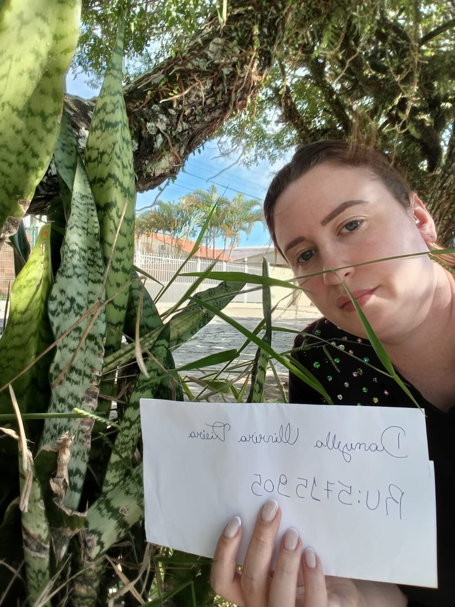

Espada-de-são-jorge
Sansevieria trifasciata
- Plantae
- Tracheophyta
- Liliopsida
- Asparagales
- Asparagaceae
- Sansevieria
- trifasciata
Características principais
Planta herbácea ornamental com folhas rígidas, longas e eretas, que apresentam faixas transversais verde-escuras e margens amareladas. Cresce em touceiras e tolera bem solos pobres e pouca água.
Você sabia?
Além de decorativa, é famosa por purificar o ar: ela absorve poluentes e libera oxigênio mesmo durante a noite, por isso é comum em ambientes fechados. Na cultura popular, é conhecida como "planta da proteção" e costuma ser cultivada perto de portas e janelas.
Por que ela importa?
Ao ser cultivada em canteiros urbanos, faz fotossíntese, contribui com a cobertura vegetal e aumenta a umidade local. É uma espécie exótica cultivada (não é nativa da Mata Atlântica), e mostra como os quintais podem combinar plantas nativas e ornamentais, criando pequenos refúgios de verde na cidade.